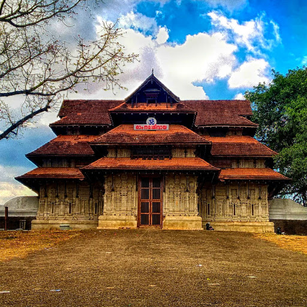
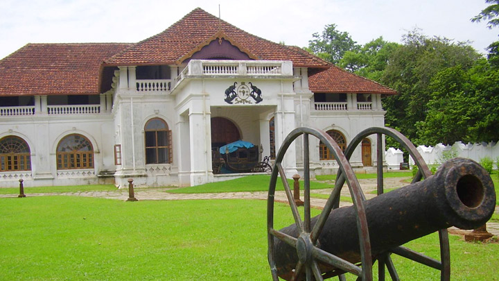
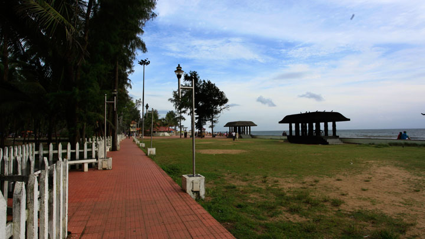

Top 5 places to visit in Thrissur
Thrissur Pooram
A resplendent festival celebrated with a grand display of caparisoned elephants, dazzling parasols, and percussion music, the Thrissur Pooram is a magnificent spectacle merging the spiritual and cultural essence of Kerala. Celebrated in the Malayalam month of medam (April-May), the pooram is held at the Thekkinkadu Maidanam in Thrissur.
Considered to be the mother of all poorams, this yearly temple festival was the brain child of Shakthan Thampuran, the Maharaja of Kochi, who organised the festival with the participation of 10 temples (Paramekkavu, Thiruvambadi Kanimangalam, Karamucku, Laloor, Choorakottukara, Panamukkampally, Ayyanthole, Chembukkavu, Neythilakavu).
The festival sports an enthralling line-up of vibrantly decked up elephants and is marked by the kudamattom ceremony. Involving swift and rhythmic changing of brightly coloured and sequined parasols, the kudamattom ceremony is one among the highlights and is a keenly watched event.
Another high point is the ilanjithara melam, a highly bewitching performance of traditional instruments which lifts the thousands gathered to a state of euphoria and bliss. Around 250 odd artistes participate in this traditional orchestra led by chenda artistes and the spirit is mirrored by the thousands of spectators who wave their hands in accordance to the rhythm generated by the chenda, kurumkuzhal, kombu and elathalam (traditional instruments of Kerala). The finale is marked by a grand fireworks show.

Vadakkumnathan Temple
The Vadakkumnathan Temple is among the oldest and most pristine structures in God’s Own Country. It was allegedly built by Lord Parasurama who, according to legends, reclaimed Kerala from the sea. The traditional Kerala style of architecture, carvings and murals depicting scenes from the famous epic Mahabharata, along with many other ancient art relics, make it a must visit site for historians and archaeologists alike.
Step in and you are immediately made aware of the rich tradition of the temple, carefully preserved in its walls to this very day. The temple is also the venue for the annual pooram festival, Thrissur Pooram, in April-May is popular for its cultural value, caparisoned elephants and magnificent fireworks display.
The temple also has a Koothambalam, the traditional temple theatre of Kerala.

Shakthan Thampuran Palace
The Palace of Shakthan Thampuran located in the district of Thrissur is a landmark in the annals of the Perumpadappu Swaroopam, the former ruling dynasty of Kochi. The palace located in the heart of Thrissur town is a major attraction, especially for those with a special interest on eminent rulers and dynasties. It is believed that the reign of King Rama Varma Shakthan Thampuran (CE 1790-1805) popularly known as Shakthan as the golden era of Kochi.
Situated close to the famous Vadakkumnathan Temple in Thrissur, the Shakthan Thampuran Palace formerly known as Vadakkechira Kovilakam was renovated by Shakthan Thampuran in its present form. The palace, built in the Dutch and Kerala style of architecture belongs to the few structures of this kind in Kerala. The main structure of the palace has a two-storeyed building and a traditional Kerala style Naalukettu. The interiors of the palace, because of its unique construction offer comfortable and pleasant staying conditions irrespective of the prevailing weather conditions.
The Shakthan Palace also houses an elaborate museum. The museum contains some interesting galleries like the Bronze Gallery, Sculpture Gallery and the Epigraphy Gallery showcasing the genesis and evolution of ancient writings.
The final resting place of Shakthan Thampuran is also located inside the palace, besides that of a Zamorin and a ruler of Kochi. The palace also has a very ancient Sarpakaavu or Serpent Grove, which is a place for worshipping the serpents according to Hindu belief, and was once widely practiced in Kerala.
Located on the Southern side of the Shakthan Palace is the Heritage Garden which exhibits and preserves some of the indigenous plants and trees of Kerala.

Athirapally Waterfalls
As you walk down the stone slabs that lead to the base of the Athirappilly waterfalls, a mysterious serenity overcomes you. It is Kerala's most famous and largest waterfall at over 80 ft high. The sight of the water crashing onto the ground leaves you with a sense of wonder at the sheer power and magnificence of nature. Located around 63 km from Thrissur district, it is a perennial picnic spot for people in the area and beyond. Its surrounding greenery is perfect for walks and picnics with loved ones. Lying at the entrance to the Sholayar forest ranges, it is a part of the Chalakudy River which calls the Western Ghats its home.
Barely 5 km away is another family favourite, Vazhachal Waterfalls. These waterfalls became famous for not just their view but the endemic species found in the surrounding dense forests. Researchers have found four endangered species of the Hornbill here, the only place they thrive in the entire Western Ghats. Ornithologists attach great significance to this location and bird watchers can come across many rare and vibrant species in these parts.

Snehatheeram Beach
The stunning Thalikulam Snehatheeram Beach is located about 25 km or 1 hour ride from Thrissur and is loved for its natural ambience and wonderful visuals of the coast. It is one of the best maintained beaches in Kerala. The sunsets are especially lovely and people flock here in large numbers to enjoy the view. Children throng to the nearby park and occasionally there are musical performances at the nearby stage. It has a welcoming vibe at all times and is a highly recommended tourist spot in the area.
